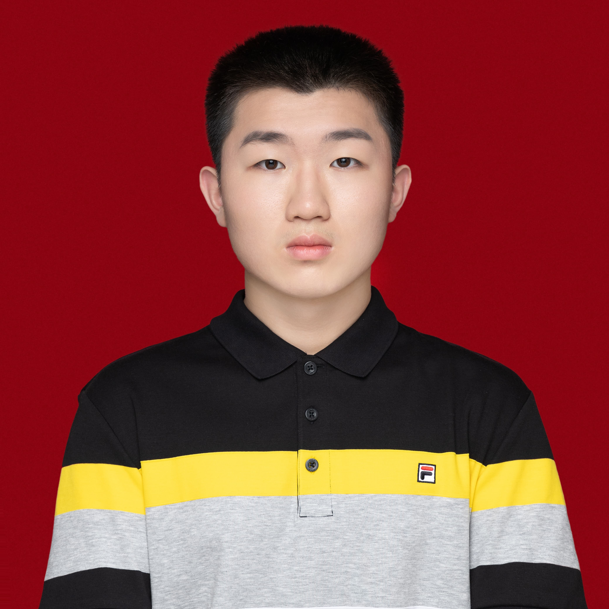

Our Team
1.Yizhi Yu- CV
Professor at National Key Lab of Immunity and Inflammation and Institute of Immunology in Naval Medical University. His current work focuses on the exploration of novel molecules for modulating innate immunity and tumor immunity.
2.Cheng Qian- CV
Assistant Professor Research in the reciprocal interaction between APC and lymphocytes and signalling pathways critical for immune cell development and differentiation.Teaching Medical Immunology for undergraduate and graduate students
3.Meng Guo-CV
Lecturer at National Key Lab of lmmunity and lnflammation and lnstitute of lmmunology in NavaMedical University. His current work focuses on tumor immunotherapy
4.Yanfang Liu-CV.
Lecturer at National Key Lab of lmmunity and lnflammation and lnstitute of lmmunology in NavaMedical University. Her current work focuses on the tumor immune microenvironment
5.Jie Chen-CV
Master at National Key Lab of Immunity and Inflammation and Institute of Immunology in Naval Medical University. Her current work focuses on the effects and mechanisms of specific amino acid metabolites in tumor immunity.
6.Shu Yu- CV
Post-graduate student at National Key Lab of Immunity and Inflammation and Institute of Immunology in Naval Medical University. Her current work focuses on the effects and mechanisms of nicotine in efferocytosis.
7.Yixian He-CV
Postgraduate student at the National Key Lab of Immunity and Inflammation and Institute of Immunology in Naval Medical University.
8.MengQi Song-CV
Postgraduate student at the National Key Lab of Immunity and Inflammation and Institute of Immunology in Naval Medical University.
9.Sheng Xu- CV
Assistant Professor at National Key Lab of Immunity and Inflammation and Institute of Immunology in Naval Medical University. He current work focus on the mechanisms of cell death and clearance, and their effect in metabolic diseases and senescence.
10.Liyuan Zhao-CV
Postdoctor at National Key Lab of Immunity and Inflammation and Institute of Immunology in Naval Medical University. Current work mainly focuses on the mechanisms of cell death in diseases.
11.Yijie Tao-CV
Lecturer at Department of Anesthesia Physiology in Naval Medical University. Her current work focuses on the posttranslational modification and protein degradation mechanism of ferroptosis regulators.
12.Tianliang Li-CV
Lecturer at the National Key Lab of Immunity and Inflammation and Institute of Immunology in Naval Medical University. Her current research focuses on the regulatory mechanisms underlying macrophage endocytosis and host defense against bacterial infections.
13.Shulei Yin- CV
Lecturer at National Key Lab of Immunity and Inflammation and Institute of Immunology in Naval Medical University. His current work focuses on the effects and mechanisms of specific metabolites in innate immunity and viral infections.
14.Chunzhen Li
Chunzhen Li is a PhD candidate in Immunology, working in the Department of Medical Immunology and National Key Laboratory of Immunity and Inflammation, Naval Medical University. He is engaged in the research of regulatory mechanisms of anti-cancer immunity and cancer immunotherapy, with a good knowledge of combining bioinformatic tools and experimental methods.
15.Shenhui Yin-CV
PhD Student at National Key Lab of Immunity and Inflammation and Institute of Immunology in Naval Medical University. Current work mainly focuses on the signaling pathway pivotal for interaction between APC and lymphocytes.
16.Zheng Li
Undergraduate Currently, he is participating in the third year of an eight-year MD program at Naval Medical University. Being actively involved in immunological research during his extracurricular time. He photographed events held by the university and has a keen interest in photography and music. 
17.Qianshan Hou
Undergraduate Study in the third year of clinical medicine at Chinese People's Liberation Army Naval Medical University and participate in cancer-related research in the extracurricular time Be a member of school’s swimming club and wind band
18.Yifan Li
Undergraduate A junior at Chinese People's Liberation Army Naval Medical University majors in clinical medicine. Participating in cardiovascular disease research in the extracurricular time, I am keen on doing experiments and exploring the mysteries of life science.
19.Xingyu Xiang
Undergraduate in NMU. Her major is Biotechnology. In this project, she is mainly responsible for production of charts and figures, mind map and wiki. Loving to spend time listening to music and watching movies.She had a nice singing performance at the graduation party.
20.Rulan Wang
Undergraduate Majoring in eight-year clinical medicine in Naval Medical University，she is responsible for website establishment,data collation and art production.In daily life, she loves Chinese classical or folk dance; in professional studying, she is devoted to medicine. She try to be more and more courageous, hoping to make contributions to the team cooperation.